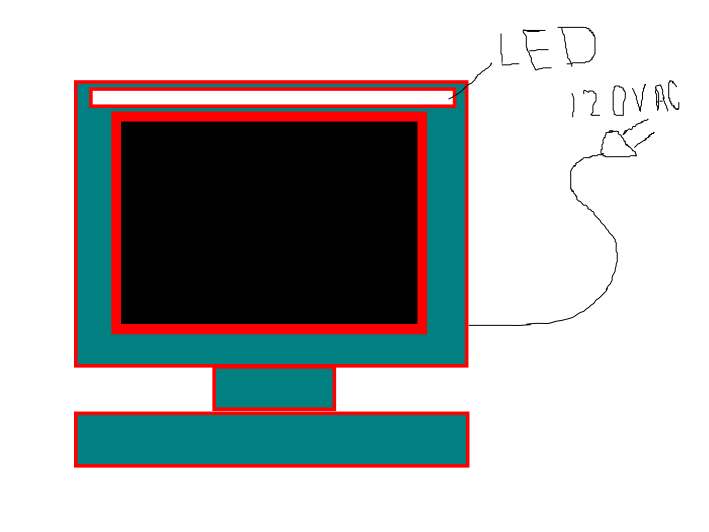
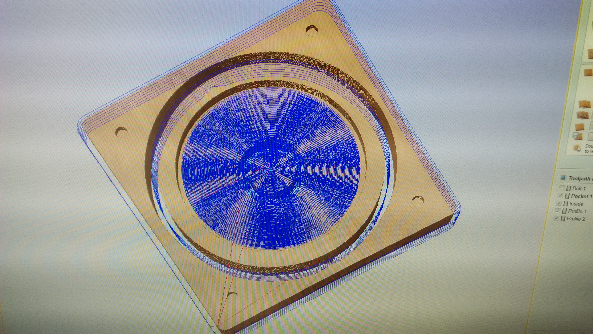
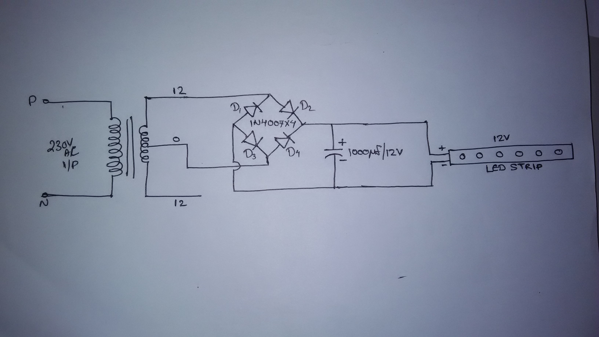

Week 4
Problem Statement
: Low light in the soldering station area.Problem Description
: The FAB Lab Trivandrum ,in electronics workbench area is a low light area. Mostly we used SMD components are used, SMD pickup and soldering we need the focused light. Other wise we loss the SMD components and take long time to soldering.Constraints
: its a normal lamp, size is big and weight is high,Size
: W:15cm , H: 5cmWeight
: 500gmMaterial
: Ribbon white LED, Power Sources (12v)Fabrication Process
: prepare a 12V DC power sources and supply 25cm Ribbon white LED. Then stick the Ribbon LED on the soldering fume collector.Budget
: 25cm Ribbon white LED - Rs. 50/- 12V DC power sources - Rs. 75/-Time
: 3 daysGoals
: Perfect soldering and save SMD componentsSolution Analysis
: In this project we use only lightweight material and power full out put (Ribbon white LED)Risks Benefits
: Low power , long last and high focusPlaned Solutions
: make an SMPS 12V DC and connect with a Ribbon white LED (Project Name : Soldering station lamp).Sketches
:
A new software was introduced to us today called rhino which is used for 2D as well as 3D drawings. I is a very powerful tool for making models for laser cutting, milling wax and for 3D printing. Luciano asked us to download and install the software. As It was a windowls/mac only software, my system was Ubuntu OS so it is not work in my system. I shifted to one of the windows system in FabLab and installed and tried some tools to design in 2d and 3D.
ShopBot
As we didn't use the ShopBot till day Luciano decided to try it. He quickly drew a simple design in Rhino and exported it as .dxf file, opened it Vcarve and gave the profiles and the drill bit/tool used for each job. As I am quite familiar with the machine it was easy to follow. The things I learned new are how to determine the pass depth, which is half of the dia of the bit used, what is feed rate, plunge rate, stepover etc.




molding and casting
Luciano explained the good practices to be followed while molding and casting. He introduced us to different kind of materials used for making molds. Taught us the difference between a positive and a negative mold, what is a counter mold etc. The design should give 5mm clearance in all directions for forming a sturdy mold also the walls of the should have 5-10 degree slope. After discussing all these we started the actual mold making process. We took the chemical for mixing, weighed them and mixed them properly. But as the humidity is very high their were chances of having the chemicals turn unusable. We also used a color die for learning the process. Then we poured it into the milled wax and left it for setting.Project Documentation
in my project have two portion
1. power source
2. light source
power source:
normal power is 230v AC, the LED strip work in 12v DC. So we convert the 230v AC to 12v DC using step down transformer, rectifier and capacitor filter
The Full Wave Bridge Rectifier
Another type of circuit that produces the same output waveform as the full wave rectifier circuit above, is that of the Full Wave Bridge Rectifier. This type of single phase rectifier uses four individual rectifying diodes connected in a closed loop “bridge” configuration to produce the desired output. The main advantage of this bridge circuit is that it does not require a special centre tapped transformer, thereby reducing its size and cost. The single secondary winding is connected to one side of the diode bridge network and the load to the other side as shown below.The Diode Bridge Rectifier
The four diodes labelled D1 to D4 are arranged in “series pairs” with only two diodes conducting current during each half cycle. During the positive half cycle of the supply, diodes D1 and D2 conduct in series while diodes D3 and D4 are reverse biased and the current flows through the load as shown below.
The Positive Half-cycle
During the negative half cycle of the supply, diodes D3 and D4 conduct in series, but diodes D1 and D2 switch “OFF” as they are now reverse biased. The current flowing through the load is the same direction as before.The Negative Half-cycle
As the current flowing through the load is unidirectional, so the voltage developed across the load is also unidirectional the same as for the previous two diode full-wave rectifier, therefore the average DC voltage across the load is 0.637Vmax.The Smoothing Capacitor
We saw in the previous section that the single phase half-wave rectifier produces an output wave every half cycle and that it was not practical to use this type of circuit to produce a steady DC supply. The full-wave bridge rectifier however, gives us a greater mean DC value (0.637 Vmax) with less superimposed ripple while the output waveform is twice that of the frequency of the input supply frequency. We can therefore increase its average DC output level even higher by connecting a suitable smoothing capacitor across the output of the bridge circuit as shown below.
Full-wave Rectifier with Smoothing Capacitor
The smoothing capacitor converts the full-wave rippled output of the rectifier into a smooth DC output voltage. Generally for DC power supply circuits the smoothing capacitor is an Aluminium Electrolytic type that has a capacitance value of 100uF or more with repeated DC voltage pulses from the rectifier charging up the capacitor to peak voltage.
However, their are two important parameters to consider when choosing a suitable smoothing capacitor and these are its Working Voltage, which must be higher than the no-load output value of the rectifier and its Capacitance Value, which determines the amount of ripple that will appear superimposed on top of the DC voltage. Too low a capacitance value and the capacitor has little effect on the output waveform. But if the smoothing capacitor is sufficiently large enough (parallel capacitors can be used) and the load current is not too large, the output voltage will be almost as smooth as pure DC. As a general rule of thumb, we are looking to have a ripple voltage of less than 100mV peak to peak.
The maximum ripple voltage present for a Full Wave Rectifier circuit is not only determined by the value of the smoothing capacitor but by the frequency and load current, and is calculated as: Bridge Rectifier Ripple Voltage
Where: I is the DC load current in amps, ƒ is the frequency of the ripple or twice the input frequency in Hertz, and C is the capacitance in Farads. The main advantages of a full-wave bridge rectifier is that it has a smaller AC ripple value for a given load and a smaller reservoir or smoothing capacitor than an equivalent half-wave rectifier. Therefore, the fundamental frequency of the ripple voltage is twice that of the AC supply frequency (100Hz) where for the half-wave rectifier it is exactly equal to the supply frequency (50Hz).
project implementation
PCB and Circuit

project out put
This is my idea to prototype product

My Product Name:"BG Tech LED Table Lamp"